ABSTRACT: Newton’s Cradles are cool desktop toys that might amuse someone for a minute. They actually demonstrate the law of Conservation. This is the first of the three laws of Thermodynamics and states that ...energy cannot be created or destroyed The second law of thermodynamics can also be seen after this build. Follow the communicated results and build Newton’s Cradle. After you build it try it out and see if you can figure out how the second law of thermodynamics can be seen in this build.
MATERIALS LIST: Parts needed include: Popsicle sticks String Marbles (5) Straw (one) Tools: Ruler and pencil Scissors Glue gun Hot glue sticks
EXPERIMENTAL PROCEDURES: Step 1 Glue popsicle sticks in two “U” shapes as shown in pictures Step 2 Glue Popsicle “U”s upside down on two other popsicle sticks as shown Step 3 cut five equal length strings each 7” inches long Step 4 Using the ruler and starting at the one inch mark, mark out every 10/16” along the inside of both popsicle sticks. You will have five marks on both popsicle sticks. Step 5 glue the five inch long pieces of string to one side of your popsicle stick frame Step 6 cut out five half inch long pieces of straw and glue them to five different marbles. Try to make sure you use the same amount of glue for each. Step 7 string the straw marbles on the string and glue the other string to the other popsicle stick. Be as accurate as possible. Step 8 Turnover carefully and test.
DATA ANALYSIS:(How well did it work)? It worked for about 15 seconds or less depending on how precisely you built it. For example if the strings were different lengths or the marbles were missaligned than it did not operate as well. My theory is that a lot of energy was lost in friction.
CONCLUSION: What Laws of Thermodynamics were demonstrated here? how? the second law of thermodynamics (Conservation of Matter) is demonstrated because, if zero energy was lost to friction, then the energy would be contained within the sysstem.
All Images
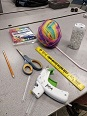 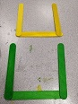 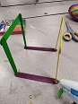 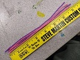 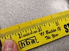 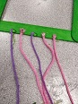 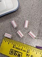 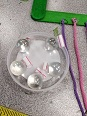 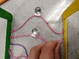 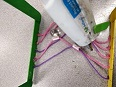 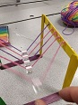